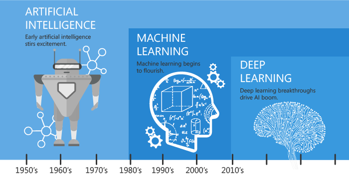
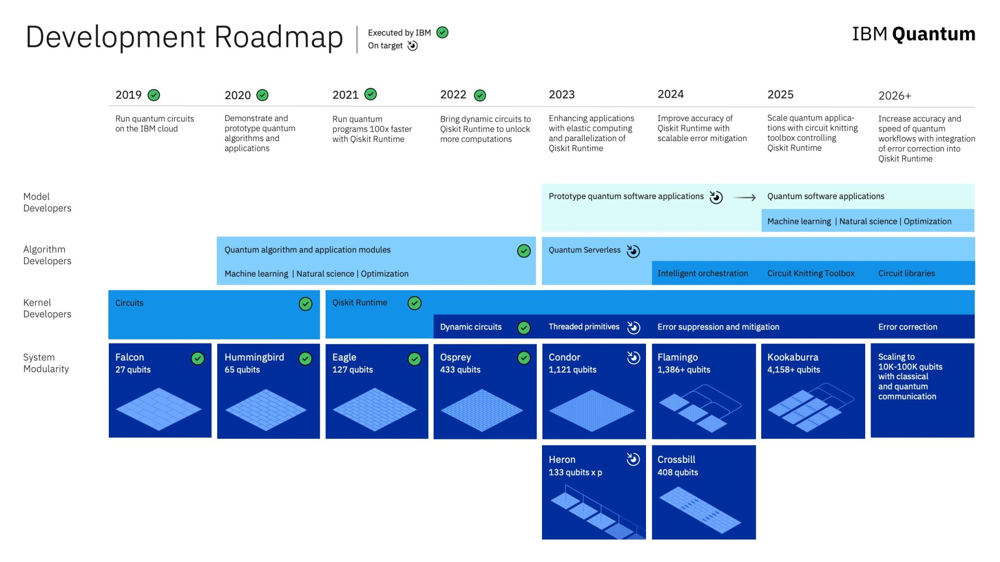

Komputery klasyczne i kwantowe.
Nature isn’t classical, dammit, and if you want to make a simulation of Nature, you’d better make it quantum mechanical, and by golly it’s a wonderful problem because it doesn’t look so easy. Richard Feynman
Quntum Machine Learning
Co oznacza termin kwantowe uczenie maszynowe?
Uczenie maszynowe to nauka i ,,sztuka’’ opisująca jak sprawić by komputery mogły ,,uczyć się’’ na podstawie danych, tak by rozwiązać problemy, których typowe programowanie nie miałoby sensu (lub byłoby zbyt skomplikowane). Więcej na ten temat znajdziesz w książce
Obliczenia kwantowe opisują przetwarzenie informacji na urządzeniach pracujących zgodnie z zasadami mechaniki kwantowej.
Uwaga! klasyczne komputery (tranzystory) również działają zgodnie z zasadami mechaniki kwantowej, ale wykonywane operacje opierają się o logikę klasyczną.
Oba kierunki są istotne w procesie przetwarzania danych obecnie i w niedalekiej przyszłości. Dlatego naturalnym pytaniem jest jak je ze sobą połączyć?
QML to zrealizowanie metod uczenia maszynowego, które mogą być wykonywane na komputerach kwantowych. Istotnym kierunkiem jest również analiza metod matematycznych wykorzystywanych w mechanice kwantowej i ich zastosowaniu w uczeniu maszynowym.
you start with classical mechanics and electrodynamics, solving lots of grueling differential equations at every step. Then you learn about the “black-body paradox” and various strange experimental results, and the great crisis these things posed for physics. Next you learn a complicated patchwork of ideas that physicists invented between 1900 and 1926 to try to make the crisis go away. Then, if you’re lucky, after years of study you funally get around to the central coceptual point: that nature is described ot by probabilities (which are always non-negative), but by numbers called amplitudes that can be positive, negative, or even complex. Scott Aaronson, Quantum Computing Since Democritus
Kwantowe uczenie maszynowe możemy określić jako uczenie maszynowe realizowane na komputerach kwantowych. Zasadniczym jest pytanie na ile i czy wogóle komputery kwantowe mogą poprawić jakość modeli uczenia maszynowego i czy pozwalają zrealizować coś więcej niż wykorzystanie klasycznych komputerów.
Odpowiedź To zależy:
- jaki problem
- jakie dane
- jaki typ analizy
- jaki typ komputera kwantowego procesory kwantowe
- co znaczy lepiej? precyzja, czas, koszt, skalowalność, zużycie energii, …
Film wprowadzający: link
Sztuczna inteligencja

Historia AI sięga 1950 roku (A. Turing). Rozwój technologii związanych z danymi ustrukturyzowanymi i nieustrukturyzowanymi realizowany np. w:
- rozpoznawanie i tworzenie ,,mowy’’
- ,,rozumienie’’ obrazów i filmów
- rozgrywanie gier
- rekomendacje
- systemy diagnostyczne
- planowanie
- podejmowanie decyzji
- booty, agenci …
Zadania te realizowane są w oparciu o uczenie maszynowe (Machine Learning) i głębokie sieci neuronowe (Deep Learning).
Dlaczego tak chętnie używamy:
- Wykładniczy wzrost ilości (treningowych) danych dostępnych w social mediach, internecie, aplikacjach mobilnych, IoT.
- Wzrost możliwości i spadek ceny (kosztów) jakości sprzętu komputerowego - co-procesory GPU, TPU, …
- Oprogramowanie Open Source
- Przewaga konkurencyjna przedsiębiorstw z AI na firmami bez AI

Uwaga! Zakładam, że znasz pojęcia związane z ML i DL.
Klasyczne komputery
Komputer to fizyczne urządzenie bazujące na obwodach elektronicznych (electronic circuits), które służy do przetwarzania informacji.

Algorytmy (programy komputerowe - software) to przepisy jak manipulować informacją reprezentowaną przez prąd w obwodzie, aby wykonywać obliczenia.
Dla wszystkich praktycznych przypadków wystarczy nam opis makroskopowy i klasyczne teorie do opisu własności prądu w obwodach. Jedak gdy naszym celem jest realizacja obliczeń z wykorzystaniem własności obiektów mikroskopowych okazuje się, że klasyczny opis przestaje być wystarczający i musimy użyć mechaniki kwantowej. Jak do tej pory jest to najlepiej przetestowany i stosowany opis mikroświata jaki znamy.
Komputer, na którym obliczenia wykonywane są zgodnie z zasadami mechaniki kwantowej nazywamy komputerem kwantowym.
Moore’s law An observation that the number of transistors on microchip roughly doubles every two years, whereas its cost is halved over that same timeframe. The growth of microprocessors is exponential
Zwiększenie szybkości działania oraz pojemności klasycznych komputerów co dwa lata zmniejszając przy tym koszty.

Fizyczne (klasyczne) ograniczenia dla procesorów
- Rozmiary tranzystora \(\sim\) rozmiary atomów - lata 90’te \(500 nm\) obecnie \(14 nm\) i \(7 nm\).
- Prędkość światła \(\sim\) max. prędkość przesyłu informacji.
- Wysoki koszt wytwarzania (kierunek układów wieloprocesorowych)
- Wysoki pobór prądu, ciepło
Obliczenia kwantowe
Termin Mechanika Kwantowa (MK) używany jest zamiennie z terminem Teoria Kwantowa. Istnieją teorie kwantowe wychodzące poza zakres mechaniki kwantowej (np. Kwantowa Teoria Pola). MK przewiduje wyniki rezultatów doświadczeń przeprowadzanaych na układach kwantowych, czyli mikroskopowych fizycznych obiektach, dla których fizyka Newtonowska nie prowadzi do prawidłowych wyników (np. atom wodoru).
W uczeniu maszynowym, spora część problemów nie jest rozwiązywalna dokładnie. Jednakże istnieją techniki przybliżania rozwiązań, dzięki czemu możemy stosować te metody w medycynie, chemii, biologii czy inżynierii.
Fizyka klasyczna realizowana jest jako graniczny przypadek MK, jednak fizycy zazwyczaj rozdzielają zagadnienia i stosują odpowiednią teorię do odpowiedniego problemu. Nikt nie buduje mostów używając MK.
Ze wzlgędu, iż wyniki MK są probabilistyczne, bardzo często można spotkać przekonanie, że MK jest teorią statystyczną. Nie jest to jednak prawda! MK można uznać za uogólnienie klasycznej definicji prawdopodobieństwa.
Historia MK
Początek MK związany jest z pracami Maxa Plancka (1900) i Alberta Einsteina (1905), którzy wprowadzili pojęcie kwantu - czyli najmniejszej porcji energii. Natomiast dalszy rozwój MK związany jest z pracami Nielsa Bohra, Erwina Schrödingera, Louisa de Broglie, Heisenberga, Diraca, Feynmana, … Pozostałe informacje możesz znaleźć w artykule o obliczeniach kwantowych
Historia obliczeń kwantowych
- 1936 Alan Turing On Computable Numbers (Hilbert Problems) - universal computing machine local
- 1976 Roman S. Ingarden - Quantum Information Theory
- 1980 Paul Benioff - teoretyczna możliwość komputerów kwantowych “Computer as a Physical System…”
- 1981 Richard Feynman - Klasyczne komputery nie podołają z symulowaniem procesów kwantowych. {“Nature isn’t classical, dammit, and if you want to make a simulation of nature, you’d better make it quantum mechanical, and by golly it’s a wonderful problem, because it doesn’t look so easy.”}
- 1985 David Deutsch pierwszy opis kwantowej maszyny Turinga. Algorytm do uruchomienia na komputerze kwantowym. Bramki kwantowe.
- 1994 Peter Shor - Algorytm faktoryzacji liczb w czasie wielomianowym.
- 1996 Lov Grover - Algorytm Grover’a “A fast quantum mechanical algorithm for database search”
- 2000 pierwszy 5-kubiotwy kwantowy komputer (oparty na nuklearnym rezonansie magnetycznym).
- 2001 demonstracja algorytmu Shora
- 2007 implementacja algorytmu Deutschas’a
- 2011 D-Wave pierwsza sprzedaż komercyjnego komputera kwantowego
- 2013 pierwszy komputer kwantowy w Google
- 2017 IBM - klasyczne superkomputery nie mogą symulować więcej niż 56 kubitów - quantum supremacy
- 23 październik 2019 Google ogłasza uzyskanie QS na 53 kubitach - superkomputer powinien działać i liczyć 10000 lat.
- IBM zmienia algorytm próbkowania uzyskując lepszy wynik na superkomputerze niż Google.
- 2020 University of Science and Technology of China (Jian-Wei Pan) 76 fotonowych kubitów na komputerze Jiuzhang - 20 sekund samplingu = 600 milionów lat obliczeń na super komputerze.
- 2021 USTC … 2022 Xanadu
Od około 1990 roku Fizycy i inforamtycy pracują nad fizyczną realizacją komputerów kwantowych. Jednym ze sposobów realizacji obliczeń wykonywanych na komputerach kwantowych jest model oparty o kwantowe obwody (quantum circuit), który w swoim działaniu wykorzystuje qubity zamiast bitów. Analogicznie do obwodów klasycznych możemy zdefiniować bramki kwantowe (quantum gates), które realizują operacje na qubitach. Fizyczne zbudowanie komputera kwantowego, czy raczej kubitu nie jest trywialne, gdyż wymaga manipulacji bardzo małym układem, który zazwyczaj wrażliwy jest na każdy rodzaj oddziaływania (dekoherencja).

Dlaczego chcemy używać komputerów kwantowych?
- Quantum Complexity
Nowy paradygmat wykorzystujący własności interferencji, superpozycji i splątania do wykonywania obliczeń. Realizowany (aktualnie) w trzech modelach:
- Quantum Circuits - model bramkowy, QAOA, VQA, metody hybrydowe
- Adiabatyczne obliczenia kwantowe (DWave) - Minimalizacja energii, QUBO, analogi modelu Isinga.
- Topologiczne komputery kwantowe
Problemy, które uważamy za trudne do rozwiązania klasycznie (optymalizacja) będą łatwe dla komputerów kwantowych. Na przykład faktoryzacja liczby.
Klasyczne komputery nie są w stanie symulować kwantowego komputera. Koszt najlepszych symulatorów rośnie wykładniczo wraz ze wzrostem liczby kubitów.
Możliwości komputerów kwantowych są ograniczone - raczej nie rozwiązują problemów np-trudnych.
Kwantowy komputer może symulować efektywnie dowolny fizyczny process, który realizuje się w naturze. (ale tego nie jesteśmy pewni).
- Quantum Error Correction
Dekoherencja niszczy stan komputera kwantowego - a to wprowadza błędy obliczeniowe. Jak zapobiec dekoherencji skoro to oddziaływanie ze środowiskiem.
Obliczenia Kwantowe potrzebują tzw. korekcji błędów.
Aktualnie ERA Noisy Intermediate-Scale Quantum (NISQ)
Proces obliczeń kwantowych

Realizacje problemów biznesowych na komputerach kwantowych
- Systemy obrony - kryptografia
- Rigetti - przewidywanie pogody
- NASA (QuAIL) - Kontrola lotów kosmicznych
- Accenture - Finanse, logistyka, komunikacja i systemy bezpieczeństwa
- BASF - Obliczenia molekularne w chemii kwantowej.
- Ford link
- Volkswagen link
- BMW link
- Boeing/Airbus
- Goldman Sach / JPMorgan
- DWave DWave and VW …
Współczesne komputery kwantowe

Dostęp do obliczeń kwantowych w chmurze
- IBM Quantum z wykorzystaniem biblioteki qiskit.
- Pennylane z wykorzystaniem biblioteki pennylane.